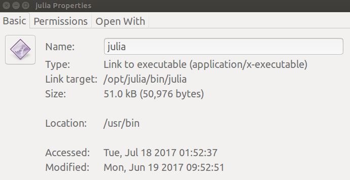

Potential Issues
julia binaries are located in a different folder than /usr/bin
In such a case you may try to hint to the binary as:
#!/opt/julia/bin/env juliaThen after making your script to make it executable with:
$ chmod a+x main.jlYou kick off a roscore and run:
$ rosrun bot_description main.jlWith the resulting error:
/opt/ros/kinetic/bin/rosrun: /home/febbo/catkin_ws/src/bot_description/main.jl: /opt/julia/bin: bad interpreter: Permission denied
/opt/ros/kinetic/bin/rosrun: line 109: /home/febbo/catkin_ws/src/bot_description/main.jl: SuccessThen after making sure that the binary is in the correct location:
$ /opt/julia/bin/julia -e 'println("Hello world")'
Hello worldA fix is to make a link to the binary in the usr/bin directory
